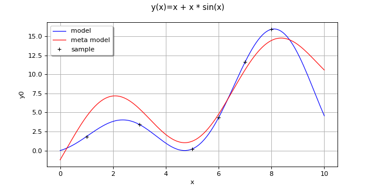

GeneralLinearModelAlgorithm¶
(Source code, png)

- class GeneralLinearModelAlgorithm(*args)¶
Algorithm for the evaluation of general linear models.
- Available constructors:
GeneralLinearModelAlgorithm(inputSample, outputSample, covarianceModel, keepCovariance=True)
GeneralLinearModelAlgorithm(inputSample, outputSample, covarianceModel, basis, keepCovariance=True)
- Parameters:
- inputSample, outputSample
Sampleor 2d-array The samples
 and
and  .
.- covarianceModel
CovarianceModel Covariance model of the Gaussian process. See notes for the details.
- basis
Basis Functional basis to estimate the trend:
 .
If
.
If  , the same basis is used for each marginal output.
, the same basis is used for each marginal output.- keepCovariancebool, optional
Indicates whether the covariance matrix has to be stored in the result structure GeneralLinearModelResult. Default value is set in resource map key GeneralLinearModelAlgorithm-KeepCovariance
- inputSample, outputSample
Notes
We suppose we have a sample
 where
where  for all
for all  , with
, with  a given function.
a given function.The objective is to build a metamodel
 , using a general linear model: the sample
, using a general linear model: the sample  is considered as the restriction of a Gaussian process
is considered as the restriction of a Gaussian process  on
on  . The Gaussian process is defined by:
. The Gaussian process is defined by:![\vect{Y}(\omega, \vect{x}) = \vect{\mu}(\vect{x}) + \vect{W}(\omega, \vect{x})]()
where:
![\vect{\mu}(\vect{x}) = \left(
\begin{array}{l}
\mu_1(\vect{x}) \\
\dots \\
\mu_d(\vect{x})
\end{array}
\right)]()
with
![\mu_\ell(\vect{x}) = \sum_{j=1}^{n_\ell} \beta_j^\ell \varphi_j^\ell(\vect{x})]() and
and  the trend functions.
the trend functions. is a Gaussian process of dimension
is a Gaussian process of dimension  with zero mean and covariance function
with zero mean and covariance function  (see
(see CovarianceModelfor the notations).We note:
![\vect{\beta}^\ell = \left(
\begin{array}{l}
\beta_1^\ell \\
\dots \\
\beta_{n_\ell}^\ell
\end{array}
\right) \in \Rset^{n_\ell}
\quad \mbox{ and } \quad
\vect{\beta} = \left(
\begin{array}{l}
\vect{\beta}^1\\
\dots \\
\vect{\beta}^d
\end{array}
\right)\in \Rset^{\sum_{\ell=1}^p n_\ell}]()
The GeneralLinearModelAlgorithm class estimates the coefficients
 and
and  where is the vector of parameters of the covariance model (a subset of
where is the vector of parameters of the covariance model (a subset of  ) that has been declared as active (by default, the full vectors
) that has been declared as active (by default, the full vectors  and
and  ).
).The estimation is done by maximizing the reduced log-likelihood of the model, see its expression below.
Estimation of the parameters
and We note:
![\vect{y} = \left(
\begin{array}{l}
\vect{y}_1 \\
\dots \\
\vect{y}_N
\end{array}
\right) \in \Rset^{dN},
\quad
\vect{m}_{\vect{\beta}} = \left(
\begin{array}{l}
\vect{\mu}(\vect{x}_1) \\
\dots \\
\vect{\mu}(\vect{x}_N)
\end{array}
\right) \in \Rset^{dN}
and]()
![\mat{C}_{\vect{p}} = \left(
\begin{array}{lcl}
\mat{C}_{11} & \dots & \mat{C}_{1N}\\
\dots & \dots & \\
\mat{C}_{N1} & \dots & \mat{C}_{NN}
\end{array}
\right) \in \cS_{dN}^+(\Rset)]()
where
 .
.The model likelihood writes:
![\cL(\vect{\beta}, \vect{p};(\vect{x}_k, \vect{y}_k)_{1 \leq k \leq N}) = \dfrac{1}{(2\pi)^{dN/2} |\det \mat{C}_{\vect{p}}|^{1/2}} \exp\left[ -\dfrac{1}{2}\Tr{\left( \vect{y}-\vect{m} \right)} \mat{C}_{\vect{p}}^{-1} \left( \vect{y}-\vect{m} \right) \right]]()
If
 is the Cholesky factor of
is the Cholesky factor of  , ie the lower triangular matrix with positive diagonal such that
, ie the lower triangular matrix with positive diagonal such that  , then:
, then:(1)¶
![\log \cL(\vect{\beta}, \vect{p};(\vect{x}_k, \vect{y}_k)_{1 \leq k \leq N}) = cste - \log \det \mat{L}_{\vect{p}} -\dfrac{1}{2} \| \mat{L}_{\vect{p}}^{-1}(\vect{y}-\vect{m}_{\vect{\beta}}) \|^2]()
The maximization of (1) leads to the following optimality condition for
 :
:![\vect{\beta}^*(\vect{p}^*)=\argmin_{\vect{\beta}} \| \mat{L}_{\vect{p}^*}^{-1}(\vect{y}-\vect{m}_{\vect{\beta}}) \|^2]()
This expression of
 as a function of
as a function of  is taken as a general relation between and and is substituted into (1), leading to a reduced log-likelihood function depending solely on .
is taken as a general relation between and and is substituted into (1), leading to a reduced log-likelihood function depending solely on .In the particular case where
 and
and  is a part of , then a further reduction is possible. In this case, if
is a part of , then a further reduction is possible. In this case, if  is the vector in which has been substituted by 1, then:
is the vector in which has been substituted by 1, then:![\| \mat{L}_{\vect{p}}^{-1}(\vect{y}-\vect{m}_{\vect{\beta}}) \|^2=\| \mat{L}_{\vect{q}}^{-1}(\vect{y}-\vect{m}_{\vect{\beta}}) \|^2/\sigma^2]()
showing that
is a function of  only, and the optimality condition for reads:
only, and the optimality condition for reads:![\vect{\sigma}^*(\vect{q}^*)=\dfrac{1}{N}\| \mat{L}_{\vect{q}^*}^{-1}(\vect{y}-\vect{m}_{\vect{\beta}^*(\vect{q}^*)}) \|^2]()
which leads to a further reduction of the log-likelihood function where both
and are replaced by their expression in terms of .The default optimizer is
TNCand can be changed thanks to the setOptimizationAlgorithm method. User could also change the default optimization solver by setting the GeneralLinearModelAlgorithm-DefaultOptimizationAlgorithm resource map key to one of theNLoptsolver names.It is also possible to proceed as follows:
ask for the reduced log-likelihood function of the GeneralLinearModelAlgorithm thanks to the getObjectiveFunction() method
optimize it with respect to the parameters
and using any optimization algorithms (that can take into account some additional constraints if needed)set the optimal parameter value into the covariance model used in the GeneralLinearModelAlgorithm
tell the algorithm not to optimize the parameter using setOptimizeParameters
- The behaviour of the reduction is controlled by the following keys in
ResourceMap: ResourceMap.SetAsBool(‘GeneralLinearModelAlgorithm-UseAnalyticalAmplitudeEstimate’, True) to use the reduction associated to
. It has no effect if or if  and is not part of
and is not part of ResourceMap.SetAsBool(‘GeneralLinearModelAlgorithm-UnbiasedVariance’, True) allows one to use the unbiased estimate of
where  is replaced by
is replaced by  in the optimality condition for .
in the optimality condition for .
With huge samples, the hierarchical matrix implementation could be used if OpenTURNS had been compiled with hmat-oss support.
This implementation, which is based on a compressed representation of an approximated covariance matrix (and its Cholesky factor), has a better complexity both in terms of memory requirements and floating point operations. To use it, the GeneralLinearModelAlgorithm-LinearAlgebra resource map key should be instancied to HMAT. Default value of the key is LAPACK.
A known centered gaussian observation noise
 can be taken into account
with
can be taken into account
with setNoise():![\hat{\vect{y}}_k = \vect{y}_k + \epsilon_k, \epsilon_k \sim \mathcal{N}(0, \tau_k^2)]()
Examples
Create the model
 and the samples:
and the samples:>>> import openturns as ot >>> f = ot.SymbolicFunction(['x'], ['x+x * sin(x)']) >>> inputSample = ot.Sample([[1.0], [3.0], [5.0], [6.0], [7.0], [8.0]]) >>> outputSample = f(inputSample)
Create the algorithm:
>>> f1 = ot.SymbolicFunction(['x'], ['sin(x)']) >>> f2 = ot.SymbolicFunction(['x'], ['x']) >>> f3 = ot.SymbolicFunction(['x'], ['cos(x)']) >>> basis = ot.Basis([f1,f2, f3]) >>> covarianceModel = ot.SquaredExponential([1.0]) >>> covarianceModel.setActiveParameter([]) >>> algo = ot.GeneralLinearModelAlgorithm(inputSample, outputSample, covarianceModel, basis) >>> algo.run()
Get the resulting meta model:
>>> result = algo.getResult() >>> metamodel = result.getMetaModel()
Methods
BuildDistribution(inputSample)Recover the distribution, with metamodel performance in mind.
Accessor to the object's name.
Accessor to the joint probability density function of the physical input vector.
getId()Accessor to the object's id.
Accessor to the input sample.
getName()Accessor to the object's name.
getNoise()Observation noise variance accessor.
Accessor to the log-likelihood function that writes as argument of the covariance's model parameters.
Accessor to solver used to optimize the covariance model parameters.
Optimization bounds accessor.
Accessor to the covariance model parameters optimization flag.
Accessor to the output sample.
Get the results of the metamodel computation.
Accessor to the object's shadowed id.
Accessor to the object's visibility state.
Return the weights of the input sample.
hasName()Test if the object is named.
Test if the object has a distinguishable name.
run()Compute the response surface.
setDistribution(distribution)Accessor to the joint probability density function of the physical input vector.
setName(name)Accessor to the object's name.
setNoise(noise)Observation noise variance accessor.
setOptimizationAlgorithm(solver)Accessor to the solver used to optimize the covariance model parameters.
setOptimizationBounds(optimizationBounds)Optimization bounds accessor.
setOptimizeParameters(optimizeParameters)Accessor to the covariance model parameters optimization flag.
setShadowedId(id)Accessor to the object's shadowed id.
setVisibility(visible)Accessor to the object's visibility state.
- __init__(*args)¶
- static BuildDistribution(inputSample)¶
Recover the distribution, with metamodel performance in mind.
For each marginal, find the best 1-d continuous parametric model else fallback to the use of a nonparametric one.
The selection is done as follow:
We start with a list of all parametric models (all factories)
For each model, we estimate its parameters if feasible.
We check then if model is valid, ie if its Kolmogorov score exceeds a threshold fixed in the MetaModelAlgorithm-PValueThreshold ResourceMap key. Default value is 5%
We sort all valid models and return the one with the optimal criterion.
For the last step, the criterion might be BIC, AIC or AICC. The specification of the criterion is done through the MetaModelAlgorithm-ModelSelectionCriterion ResourceMap key. Default value is fixed to BIC. Note that if there is no valid candidate, we estimate a non-parametric model (
KernelSmoothingorHistogram). The MetaModelAlgorithm-NonParametricModel ResourceMap key allows selecting the preferred one. Default value is HistogramOne each marginal is estimated, we use the Spearman independence test on each component pair to decide whether an independent copula. In case of non independence, we rely on a
NormalCopula.- Parameters:
- sample
Sample Input sample.
- sample
- Returns:
- distribution
Distribution Input distribution.
- distribution
- getClassName()¶
Accessor to the object’s name.
- Returns:
- class_namestr
The object class name (object.__class__.__name__).
- getDistribution()¶
Accessor to the joint probability density function of the physical input vector.
- Returns:
- distribution
Distribution Joint probability density function of the physical input vector.
- distribution
- getId()¶
Accessor to the object’s id.
- Returns:
- idint
Internal unique identifier.
- getInputSample()¶
Accessor to the input sample.
- Returns:
- inputSample
Sample Input sample of a model evaluated apart.
- inputSample
- getName()¶
Accessor to the object’s name.
- Returns:
- namestr
The name of the object.
- getNoise()¶
Observation noise variance accessor.
- Parameters:
- noisesequence of positive float
The noise variance
 of each output value.
of each output value.
- getObjectiveFunction()¶
Accessor to the log-likelihood function that writes as argument of the covariance’s model parameters.
Notes
The log-likelihood function may be useful for some postprocessing: maximization using external optimizers for example.
Examples
Create the model
and the samples:>>> import openturns as ot >>> f = ot.SymbolicFunction(['x0'], ['x0 * sin(x0)']) >>> inputSample = ot.Sample([[1.0], [3.0], [5.0], [6.0], [7.0], [8.0]]) >>> outputSample = f(inputSample)
Create the algorithm:
>>> basis = ot.ConstantBasisFactory().build() >>> covarianceModel = ot.SquaredExponential(1) >>> algo = ot.GeneralLinearModelAlgorithm(inputSample, outputSample, covarianceModel, basis) >>> algo.run()
Get the log-likelihood function:
>>> likelihoodFunction = algo.getObjectiveFunction()
- getOptimizationAlgorithm()¶
Accessor to solver used to optimize the covariance model parameters.
- Returns:
- algorithm
OptimizationAlgorithm Solver used to optimize the covariance model parameters. Default optimizer is
TNC
- algorithm
- getOptimizationBounds()¶
Optimization bounds accessor.
- Returns:
- bounds
Interval Bounds for covariance model parameter optimization.
- bounds
- getOptimizeParameters()¶
Accessor to the covariance model parameters optimization flag.
- Returns:
- optimizeParametersbool
Whether to optimize the covariance model parameters.
- getOutputSample()¶
Accessor to the output sample.
- Returns:
- outputSample
Sample Output sample of a model evaluated apart.
- outputSample
- getResult()¶
Get the results of the metamodel computation.
- Returns:
- result
GeneralLinearModelResult Structure containing all the results obtained after computation and created by the method
run().
- result
- getShadowedId()¶
Accessor to the object’s shadowed id.
- Returns:
- idint
Internal unique identifier.
- getVisibility()¶
Accessor to the object’s visibility state.
- Returns:
- visiblebool
Visibility flag.
- getWeights()¶
Return the weights of the input sample.
- Returns:
- weightssequence of float
The weights of the points in the input sample.
- hasName()¶
Test if the object is named.
- Returns:
- hasNamebool
True if the name is not empty.
- hasVisibleName()¶
Test if the object has a distinguishable name.
- Returns:
- hasVisibleNamebool
True if the name is not empty and not the default one.
- run()¶
Compute the response surface.
Notes
It computes the response surface and creates a
GeneralLinearModelResultstructure containing all the results.
- setDistribution(distribution)¶
Accessor to the joint probability density function of the physical input vector.
- Parameters:
- distribution
Distribution Joint probability density function of the physical input vector.
- distribution
- setName(name)¶
Accessor to the object’s name.
- Parameters:
- namestr
The name of the object.
- setNoise(noise)¶
Observation noise variance accessor.
- Parameters:
- noisesequence of positive float
The noise variance
of each output value.
- setOptimizationAlgorithm(solver)¶
Accessor to the solver used to optimize the covariance model parameters.
- Parameters:
- algorithm
OptimizationAlgorithm Solver used to optimize the covariance model parameters.
- algorithm
- setOptimizationBounds(optimizationBounds)¶
Optimization bounds accessor.
- Parameters:
- bounds
Interval Bounds for covariance model parameter optimization.
- bounds
Notes
Parameters involved by this method are:
Scale parameters,
Amplitude parameters if output dimension is greater than one or analytical sigma disabled,
Additional parameters.
Lower & upper bounds are defined in resource map. Default lower upper bounds value for all parameters is
 and defined thanks to the
GeneralLinearModelAlgorithm-DefaultOptimizationLowerBound
resource map key.
and defined thanks to the
GeneralLinearModelAlgorithm-DefaultOptimizationLowerBound
resource map key.For scale parameters, default upper bounds are set as
 times the difference between the max and min values of X for
each coordinate, X being the (transformed) input sample.
The value is defined in resource map
(GeneralLinearModelAlgorithm-DefaultOptimizationScaleFactor).
times the difference between the max and min values of X for
each coordinate, X being the (transformed) input sample.
The value is defined in resource map
(GeneralLinearModelAlgorithm-DefaultOptimizationScaleFactor).Finally for other parameters (amplitude,…), default upper bound is set to
 (corresponding resource map key is
GeneralLinearModelAlgorithm-DefaultOptimizationUpperBound)
(corresponding resource map key is
GeneralLinearModelAlgorithm-DefaultOptimizationUpperBound)
- setOptimizeParameters(optimizeParameters)¶
Accessor to the covariance model parameters optimization flag.
- Parameters:
- optimizeParametersbool
Whether to optimize the covariance model parameters.
- setShadowedId(id)¶
Accessor to the object’s shadowed id.
- Parameters:
- idint
Internal unique identifier.
- setVisibility(visible)¶
Accessor to the object’s visibility state.
- Parameters:
- visiblebool
Visibility flag.
 .
.
{kind=link}